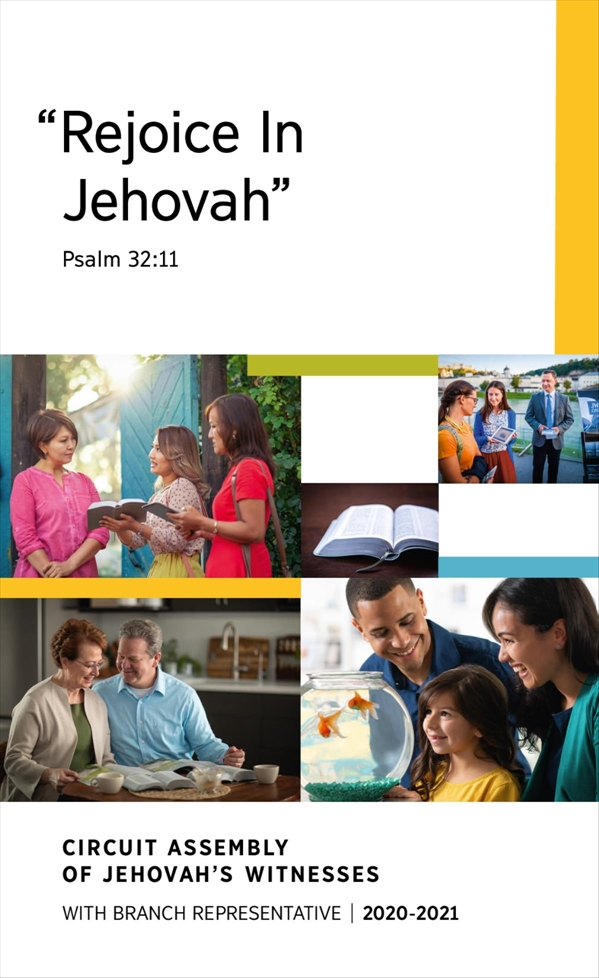

<div id="f1" class="north_center">
<figure>

</figure>
</div>
<header>
<h1 class="coverTtl" id="p1" data-pid="1"><span id="page1" class="pageNum" data-no="1" data-before-text="1"></span><strong>2020-2021 Circuit Assembly Program​—With Branch Representative</strong></h1>
</header>
<p id="p2" data-pid="2" class="themeScrp"><strong>“Rejoice In Jehovah”​—</strong><a href="jwpub://b/NWTR/19:32:11-19:32:11" data-bid="1-1" class="b"><strong>Psalm 32:11</strong></a></p>
